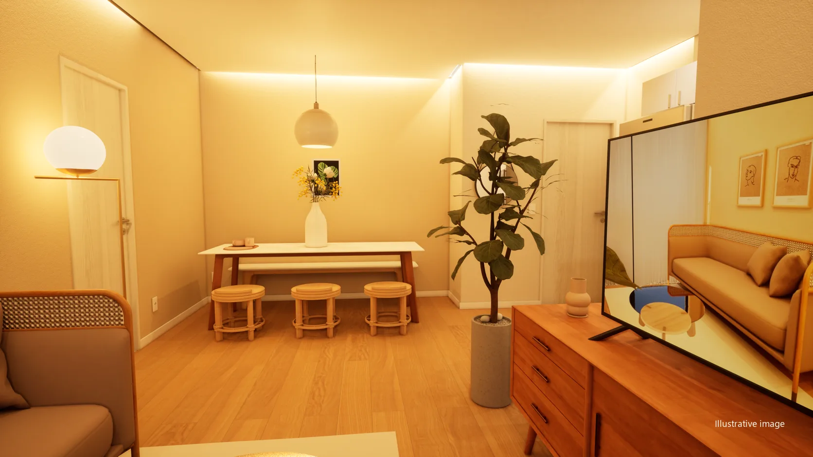
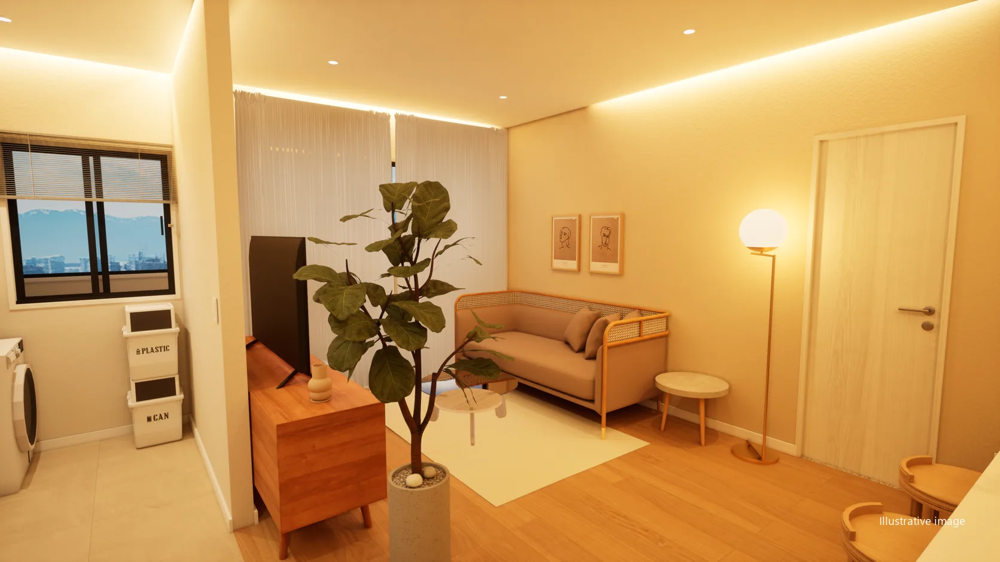
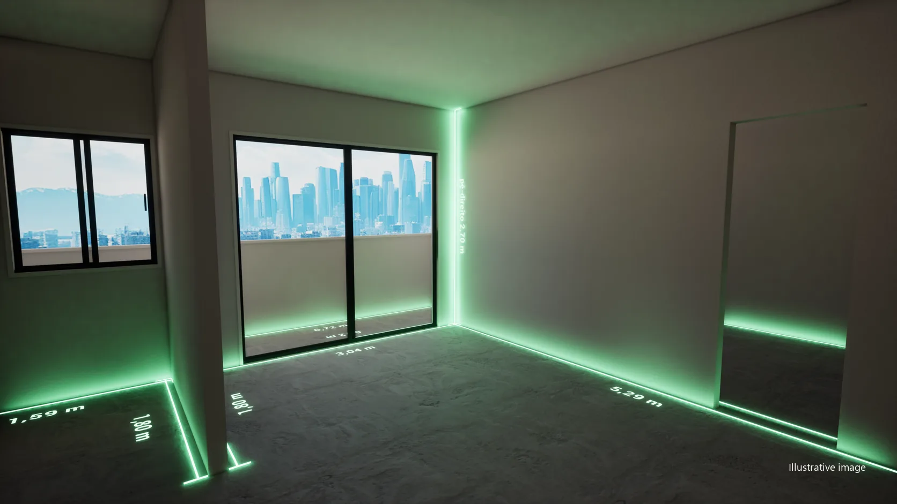
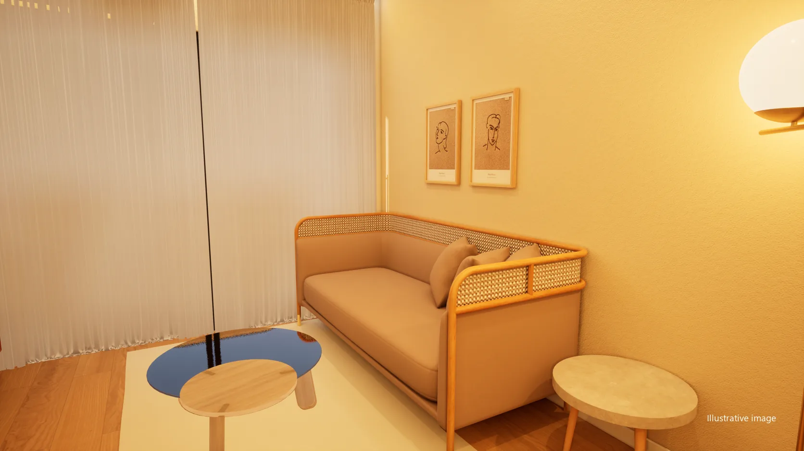

Explore
Present the rooms, explore the floor plan and demonstrate the configuration options planned for the project.
FOR REAL ESTATE DEVELOPERS
Turn floor plans into experiences that help buyers understand, explore and picture life in your development.
A virtual experience with project management
and support at every stage.

SEE IT IN ACTION
Footage recorded in the VR headset, in real time, alongside rendered images of the same apartment: styles, finishes, day and night, the furnished floor plan.
61 s · no sound · Illustrative images
01 / A COMPLETE SOLUTION
DecoradoVirtual brings together the interactive presentation of the property and the organisation needed to produce, review and maintain that experience.
The developer follows the project. The sales team gains a more concrete way to present the development. Buyers explore the rooms and picture the possibilities before construction is complete.
Present the rooms, explore the floor plan and demonstrate the configuration options planned for the project.
Organise stages, owners and requests, with a history of versions and approvals.
Count on us for the briefing, the reviews and getting the experience ready for sales.


BARE SHELLFURNISHED02 / CLEARER DECISIONS
A floor plan shows the layout. The virtual experience helps people understand how the spaces relate and imagine different ways of living.
Use the experience as an invitation to discover the development and deepen interest in a floor plan, a room or a decoration option.
Remote browser access is planned within the scope, subject to technical validation and contracted capacity.
03 / CHANGE IT ON THE SPOT
In the headset or on the computer, every choice appears instantly, in the room itself. The options for each development are defined in the briefing.

23 s · no sound · Illustrative images
04 / COMMON AREAS
The lobby, the gym and the pool are part of the experience too, by day and by night, in the headset and at real scale. On the home screen, each development brings together its floor plans and common areas.
05 / MANAGEMENT WITH VISIBILITY
Every request has context. Every review has a history. The version shown to buyers goes through a defined approval.
Briefing, tasks and schedule organised to make clear how production is going and what depends on each participant.
Requests and comments linked to the project, with identified versions to support reviews and avoid doubts about the approved material.
Help to align materials, handle adjustments and prepare the team to present the experience within the contracted scope.
The visual representation respects the development’s approved information. Decoration alternatives are presented as possibilities, without changing the property’s official specifications.
06 / FROM BRIEFING TO PRESENTATION
Sales goals, floor plans, materials and the development’s audience.
Rooms, finishes and interactions within the agreed scope.
Comments, adjustments and approval of the presentation version.
Getting ready for sales, with support and defined access conditions.
07 / YOUR NEXT LAUNCH
A pilot lets you evaluate the experience with your sales team, fine-tune the service and define the best way to operate.
01 Choose a floor plan and the priority rooms.
02 Define the configurations and the presentation script.
03 Agree on reviews, support and access conditions.
04 Evaluate clarity for the buyer and usefulness for the sales agent.
FREQUENTLY ASKED QUESTIONS
The proposal combines producing the virtual experience, managing the stages and ongoing support. Rooms, interactions, reviews and support are defined for each development.
Remote service is part of the proposal. Interactive browser access is planned and depends on technical validation in the pilot, connection conditions and contracted capacity.
Material, decoration and configuration options are defined in the briefing and implemented within the scope. Visual alternatives are kept distinct from the property’s official specifications.
Agree on criteria with your team: ease of presentation, understanding of the floor plan, buyers’ questions and follow-up. Conversion goals should be measured in the developer’s real context.
Yes. The same experience runs in real time on the computer and in the VR headset connected to it, with no internet needed during the presentation.
CONTACT
Talk to the team on WhatsApp or by email, or follow DecoradoVirtual on social media. We speak English and Portuguese.